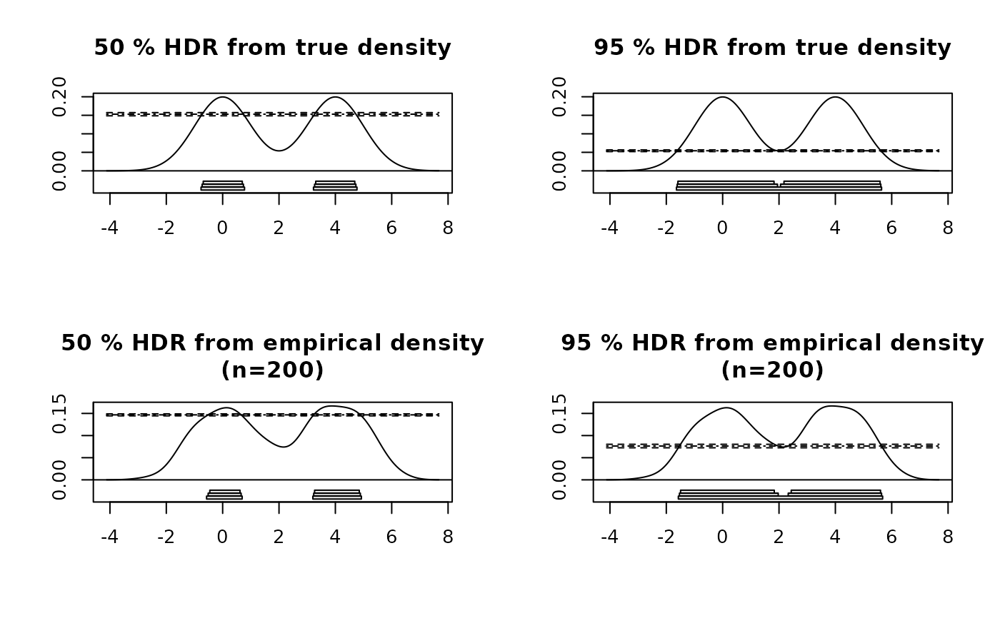

Plots Highest Density Regions with confidence intervals.
Usage
# S3 method for class 'hdrconf'
plot(x, den, ...)References
Hyndman, R.J. (1996) Computing and graphing highest density regions American Statistician, 50, 120-126.
Examples
x <- c(rnorm(100,0,1),rnorm(100,4,1))
den <- density(x,bw=bw.SJ(x))
trueden <- den
trueden$y <- 0.5*(exp(-0.5*(den$x*den$x)) + exp(-0.5*(den$x-4)^2))/sqrt(2*pi)
sortx <- sort(x)
par(mfcol=c(2,2))
for(conf in c(50,95))
{
m <- hdrconf(sortx,trueden,conf=conf)
plot(m,trueden,main=paste(conf,"% HDR from true density"))
m <- hdrconf(sortx,den,conf=conf)
plot(m,den,main=paste(conf,"% HDR from empirical density\n(n=200)"))
}
